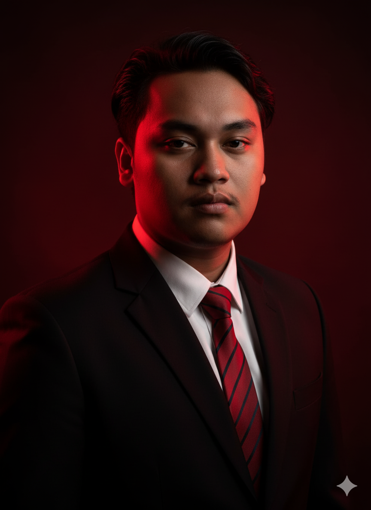

Mahasiswa Sistem Informasi UTY dengan kombinasi pengalaman unik di bidang Engineering dan Audit Sistem Informasi. Latar belakang saya sebagai Powerline Engineer membentuk disiplin kerja tinggi dan kemampuan analitis yang presisi.
saya memadukan keahlian teknis dengan kepemimpinan untuk menciptakan solusi web development yang aman, fungsional, dan berorientasi pada kebutuhan pengguna.
